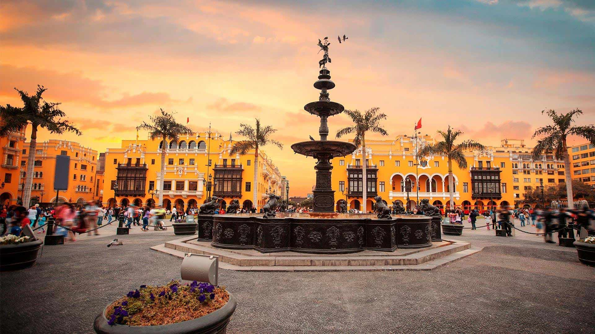
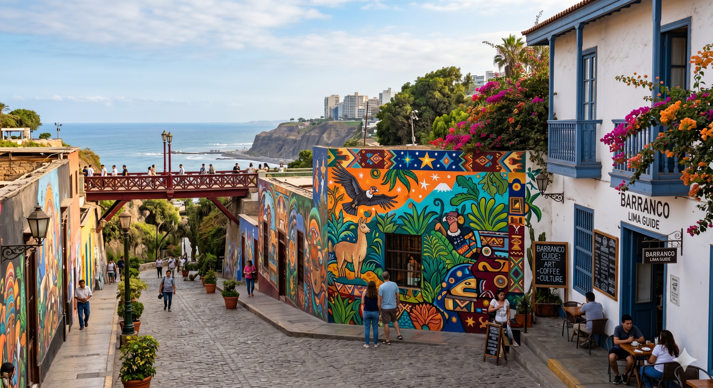

Top 3 actividades para hacer en Lima

Pasear por el Malecón de Miraflores
Disfruta de la vista al Océano Pacífico, camina por los parques y mira el atardecer.

Recorrer el Centro Histórico
Descubre la arquitectura colonial, la Plaza Mayor y las icónicas balcones de Lima.

Explorar el distrito de Barranco
Pasea por el Puente de los Suspiros, admira el arte urbano y disfruta del ambiente bohemio.